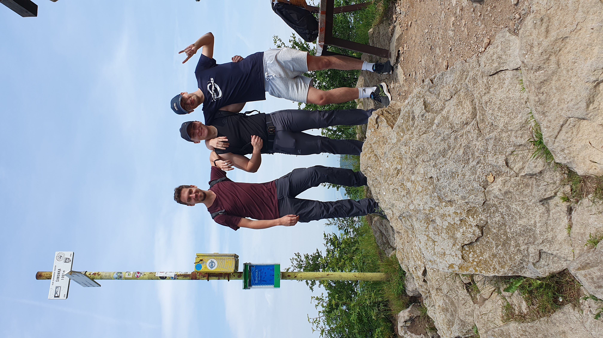

Toto som ja s kamošmi
Pochádzam z dediny pri Prešove s názvom Malý Šariš. Prvú fotku som zvolil s kamátmi, pretože dobrú spoločnosť si vážim. Ja som ten blbec napravo :)

Pochádzam z dediny pri Prešove s názvom Malý Šariš. Prvú fotku som zvolil s kamátmi, pretože dobrú spoločnosť si vážim. Ja som ten blbec napravo :)
Som zástanca toho, že každý si je správcom svojho šťastia. Ži a nechaj žiť, nech si každý žije ako chce. No pozor, tvoja sloboda sa končí tam, kde iného začína.

Jedným z mojich záujmov popri bicyklovaní a oprave bicyklov je aj Formula 1. Sledujem to už nejaký ten rok a v roku 2021 som mal možnosť to zažiť na vlastnej koži, no nie tak ako by ste si to predstavovali...
Okrem iného študujem na STUčke. Aplikovaná informatika na fakulte elketrotechniky a informatiky. Toto je zoznam mojich obľúbených predmetov doteraz:
Možno do zoznamu niekedy pridáme aj webové technológie. Zatiaľ zaujímavý predmet, no neteší ma fakt, že je momentálne 3 hodín ráno a ja vstávam o 6.30 na telesnú výchovu. Paráda však?
Toto je určite jeden z mojich top citátov, žiaľ neviem kto to kedy povedal. Myslím ale, že to bol môj prihlúply spolužiak zo strednej Tak máte to tu. Čo to znamená? Čo ja viem. Je veľa hodín, neviem momentálne rozmýšľať. Urob si "research" sám.
Jedna vec je ale istá. Font nie je dobrý. HAHA je úžasný, nie? Ak som mnou nesúhlasíš, nemusíš, ani ja nerád súhlasím s vecami, ktoré mi nie sú po chuti. Ako sa hovorí: Taký je futbal.